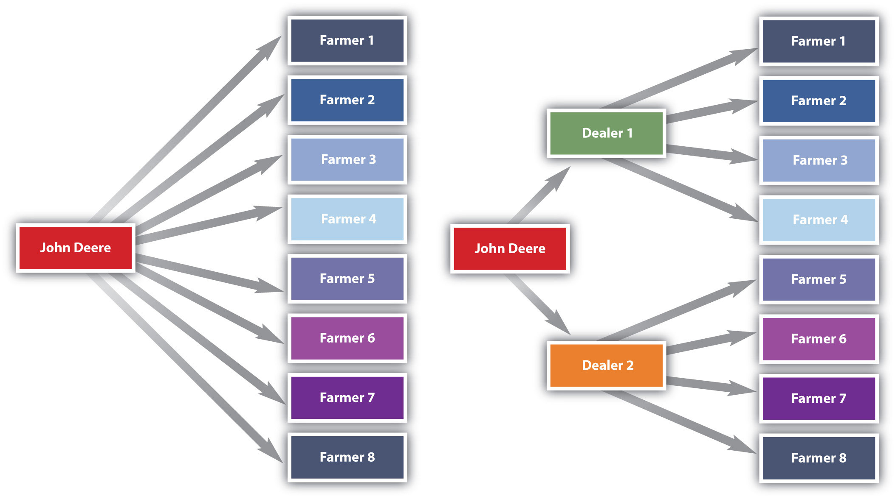

Today, marketing channel decisions are as important as the decisions companies make about the features and prices of products.Randy Littleson, “Supply Chain Trends: What’s In, What’s Out,” Manufacturing.net, February 6, 2007, http://www.manufacturing.net/articles/2007/02/supply-chain-trends-whats-in-whats-out (accessed April 13, 2012). Consumers have become more demanding. They are used to getting what they want. If you can’t get your product to them when, where, and how they want it, they will simply buy a competing product. In other words, how companies sell has become as important as what they sell.“Developing a Channel Strategy,” CBSNews.com, http://www.cbsnews.com/8301-505125_162-51168339/developing-a-channel-strategy/?tag=mncol;lst;1 (accessed April 13, 2012).
The firms a company partners with to actively promote and sell a product as it travels through its marketing channel to users are referred to by the firm as its channel membersThe firms a company partners with to actively promote and sell a product as it travels through its marketing channel to users. (or partners). Companies strive to choose not only the best marketing channels but also the best channel partners. A strong channel partner like Walmart can promote and sell the heck out of a product that might not otherwise turn a profit for its producer. In turn, Walmart wants to work with strong channel partners it can depend on to continuously provide it with great products that fly off the shelves. By contrast, a weak channel partner can be a liability.
The simplest marketing channel consists of just two parties—a producer and a consumer. Your haircut is a good example. When you get a haircut, it travels straight from your hairdresser to you. No one else owns, handles, or remarkets the haircut to you before you get it. However, many other products and services pass through multiple organizations before they get to you. These organizations are called intermediariesThird parties that facilitate the supply and sale of products from manufacturers to users. (or middlemen or resellers).
Companies partner with intermediaries not because they necessarily want to (ideally they could sell their products straight to users) but because the intermediaries can help them sell the products better than they could working alone. In other words, they have some sort of capabilities the producer needs: contact with many customers or the right customers, marketing expertise, shipping and handling capabilities, and the ability to lend the producer credit are among the types of help a firm can get by utilizing a channel partner. There are four forms of utility, or value, that channels offer. These are time, form, place, and ownership.
Intermediaries also create efficiencies by streamlining the number of transactions an organization must make, each of which takes time and costs money to conduct. As Figure 8.1 "Using Intermediaries to Streamline the Number of Transactions" shows, by selling the tractors it makes through local farm machinery dealers, the farm machinery manufacturer John Deere can streamline the number of transactions it makes from eight to just two.
Figure 8.1 Using Intermediaries to Streamline the Number of Transactions
The marketing environment is always changing, so what was a great channel or channel partner yesterday might not be a great channel partner today. Changes in technology, production techniques, and your customer’s needs mean you have to continually reevaluate your marketing channels and the channel partners you ally yourself with. Moreover, when you create a new product, you can’t assume the channels that were used in the past are the best ones.Geoff Lancaster and Frank Withey, Marketing Fundamentals (Burlington, MA: Butterworth-Heinemann, 2007), 173. A different channel or channel partner might be better.
Consider Microsoft’s digital encyclopedia, Encarta, which was first sold on CD and via online subscription in the early 1990s. Encarta nearly destroyed Encyclopedia Britannica, a firm that had dominated the print encyclopedia business for literally centuries. Ironically, Microsoft had actually tried to partner with Encyclopedia Britannica to use its encyclopedia information to make Encarta but was turned down.
But today, Encarta no longer exists. It’s been put out of business by the free online encyclopedia Wikipedia. The point is that products and their marketing channels are constantly evolving. Consequently, you and your company have to be ready to evolve, too.
In the past few decades, organizations have begun taking a more holistic look at their marketing channels. Instead of looking at only the firms that sell and promote their products, they have begun looking at all the organizations that figure into any part of the process of producing, promoting, and delivering an offering to its user. All these organizations are considered part of the offering’s supply chainAll the organizations that participate in the production, promotion, and delivery of a product or service from the producer to the end consumer..
For instance, the supply chain includes producers of the raw materials that go into a product. If it’s a food product, the supply chain extends back through the distributors all the way to the farmers who grew the ingredients and the companies from which the farmers purchased the seeds, fertilizer, or animals. A product’s supply chain also includes transportation companies such as railroads that help physically move the product and companies that build Web sites for other companies. If a software maker hires a company in India to help it write a computer program, the Indian company is part of the partner’s supply chain. These types of firms aren’t considered channel partners because it’s not their job to actively sell the products being produced. Nonetheless, they all contribute to a product’s success or failure.
Firms are constantly monitoring their supply chains and tinkering with them so they’re as efficient as possible. This process is called supply chain managementThe process of managing and refining supply chains so as to make them as efficient as possible.. Supply chain management is challenging. If done well, it’s practically an art.
Let’s now look at the basic types of channel partners. To help you understand the various types of channel partners, we will go over the most common types of intermediaries. The two types you hear about most frequently are wholesalers and retailers. Keep in mind, however, that the categories we discuss in this section are just that—categories. In recent years, the lines between wholesalers, retailers, and producers have begun to blur considerably. Microsoft is a producer of goods, but recently it began opening up its own retail stores to sell products to consumers, much as Apple has done.Daniel Lyons, “The Lost Decade,” Newsweek, November 9, 2009, 27. As you will learn later in the chapter, Walmart and other large retailers now produce their own store brands and sell them to other retailers. Similarly, many producers have outsourced their manufacturing, and although they still call themselves manufacturers, they act more like wholesalers. Wherever organizations see an opportunity, they are beginning to take it, regardless of their positions in marketing channels.
WholesalersBusinesses that purchase products in large quantities, can store the products, can break the pallets down into cases or units, and can deliver the desired quantity of a product to distributors, retailers, and/or consumers. obtain large quantities of products from producers, store them, and break them down into cases and other smaller units more convenient for retailers to buy, a process called “breaking bulk.” Wholesalers get their name from the fact that they resell goods “whole” to other companies without transforming the goods. If you are trying to stock a small electronics store, you probably don’t want to purchase a truckload of iPods. Instead, you probably want to buy a smaller assortment of iPods as well as other merchandise. Via wholesalers, you can get the assortment of products you want in the quantities you want. Some wholesalers carry a wide range of different products. Other carry narrow ranges of products.
Most wholesalers “take title” to goods—or own them until purchased by other sellers. Wholesalers such as these assume a great deal of risk on the part of companies further down the marketing channel as a result. For example, if the iPods you plan to purchase are stolen during shipment, damaged, or become outdated because a new model has been released, the wholesaler suffers the loss—not you. Electronic products, in particular, become obsolete very quickly. Think about the cell phone you owned just a couple of years ago. Would you want to have to use it today?
Marketing Channels and Products That Become Obsolete
http://www.youtube.com/watch?v=mZZPsu1SgMwGood thing you don’t have to use the cell phone shown in this YouTube video. You could forget about putting it in your purse or pocket. But in 1973, the phone was the latest and greatest of gadgets. Martin Cooper, who championed the development of the device, was a lead engineer at Motorola. To whom do you think Cooper made his first phone call on the device? To his rivals at AT&T, which at the time manufactured only “landline” phones. He wanted to let them know he and Motorola had changed the telephone game.
There are many types of wholesalers. The three basic types of wholesalers are merchant wholesalers, brokers, and manufacturers’ agents, each of which we discuss next.
Merchant wholesalersWholesalers that take title to the goods. are wholesalers that take title to the goods. They are also sometimes referred to as distributorsBusinesses that purchase large quantities of products, can store products, can sell products, can deliver desired quantities of products, and can offer services. Distributors generally take title to products and employ a sales force to actively market their products., dealers, and jobbers. The category includes both full-service wholesalers and limited-service wholesalers. Full-service wholesalers perform a broad range of services for their customers, such as stocking inventories, operating warehouses, supplying credit to buyers, employing salespeople to assist customers, and delivering goods to customers. Maurice Sporting Goods is a large North American full-service wholesaler of hunting and fishing equipment. The firm’s services include helping customers figure out which products to stock, how to price them, and how to display them.“Developing a Channel Strategy,” CBSNews.com, http://www.cbsnews.com/8301-505125_162-51168339/developing-a-channel-strategy/?tag=mncol;lst;1 (accessed April 13, 2012).
Limited-service wholesalers offer fewer services to their customers but lower prices. They might not offer delivery services, extend their customers’ credit, or have sales forces that actively call sellers. Cash-and-carry wholesalers are an example. Small retailers often buy from cash-and-carry wholesalers to keep their prices as low as big retailers that get large discounts because of the huge volumes of goods they buy.
Drop shippers are another type of limited-service wholesaler. Although drop shippers take title to the goods, they don’t actually take possession of them or handle them, oftentimes because they deal with goods that are large or bulky. Instead, they earn a commission by finding sellers and passing their orders along to producers, who then ship them directly to the sellers. Mail-order wholesalers sell their products using catalogs instead of sales forces and then ship the products to buyers. Truck jobbers (or truck wholesalers) actually store products, which are often highly perishable (e.g., fresh fish), on their trucks. The trucks make the rounds to customers, who inspect and select the products they want straight off the trucks.
Rack jobbers sell specialty products, such as books, hosiery, and magazines that they display on their own racks in stores. Rack jobbers retain the title to the goods while the merchandise is in the stores for sale. Periodically, they take count of what’s been sold off their racks and then bill the stores for those items.
BrokersRepresentatives of one or more manufacturers who sell products on their behalf to consumers, wholesalers, and distributors but do not take title to them., or agents, don’t purchase or take title to the products they sell. Their role is limited to negotiating sales contracts for producers. Clothing, furniture, food, and commodities such as lumber and steel are often sold by brokers. They are generally paid a commission for what they sell and are assigned to different geographical territories by the producers with whom they work. Because they have excellent industry contacts, brokers and agents are “go-to” resources for both consumers and companies trying to buy and sell products.
The most common form of agent and broker consumers encounter are in real estate. A real estate agent represents, or acts for, either the buyer or the seller. The listing agent is contacted by the homeowner who wants to sell, and puts the house on the market. The buyer also contacts an agent who shows the buyer a number of houses. If there is a house that the buyer wants to purchase, the agent calls the listing agent and the price is negotiated. In some states, the buyer’s agent is a legal representative of the seller, unless a buyer’s agent agreement is signed, which is something to keep in mind when you are the buyer. Agents work for brokers, who act as sort of a head agent and market the company’s services while making sure that all of the legal requirements are met.
Manufacturers’ sales offices or branchesSelling units that work directly for manufacturers. A type of factory outlet store. are selling units that work directly for manufacturers. These are found in business-to-business settings. For example, Konica-Minolta Business Systems (KMBS) has a system of sales branches that sell KMBS printers and copiers directly to companies that need them. As a consumer, it would be rare for you to interact directly with a manufacturer through a sales office because in those instances, such as with Apple stores and Nike stores, these are considered retail outlets.
RetailersBusinesses that purchase products from manufacturers, wholesalers, agents, or distributors and then sell them to consumers. buy products from wholesalers, agents, or distributors and then sell them to consumers. Retailers vary by the types of products they sell, their sizes, the prices they charge, the level of service they provide consumers, and the convenience or speed they offer. You are familiar with many of these types of retailers because you have purchased products from them. We mentioned Nike and Apple as examples of companies that make and sell products directly to consumers, but in reality, Nike and Apple contract manufacturing to other companies. They may design the products, but they actually buy the finished goods from others.
SupermarketsSelf-service retailers that provide a full range of food products to consumers as well as some household products., or grocery stores, are self-service retailers that provide a full range of food products to consumers, as well as some household products. Supermarkets can be high, medium, or low range in terms of the prices they charge and the service and variety of products they offer. Whole Foods and Central Market are grocers that offer a wide variety of products, generally at higher prices. Midrange supermarkets include stores like Albertsons and Kroger. Aldi and Sack ’n Save are examples of supermarkets with a limited selection of products and service but low prices. DrugstoresStores that specialize in selling over-the-counter medication, prescriptions, and health and beauty products and offer services such as photo developing. specialize in selling over-the-counter medications, prescriptions, and health and beauty products and offer services such as photo developing.
Convenience storesMiniature supermarkets that stock a limited assortment of products. Many of them sell gasoline and are open twenty-four hours a day. are miniature supermarkets. Many of them sell gasoline and are open twenty-four hours a day. Often they are located on corners, making it easy and fast for consumers to get in and out. Some of these stores contain fast-food franchises like Church’s Chicken and Jack in the Box. Consumers pay for the convenience in the form of higher markups on products. In Europe, as well as in rural parts of the United States, you’ll find convenience stores that offer fresh meat and produce.
Specialty storesStores that sell a certain type of product. sell a certain type of product, but they usually carry a deep line of it. Zales, which sells jewelry, and Williams-Sonoma, which sells an array of kitchen and cooking-related products, are examples of specialty stores. The personnel who work in specialty stores are usually knowledgeable and often provide customers with a high level of service. Specialty stores vary by size. Many are small. However, in recent years, giant specialty stores called category killers have emerged. A category killerA firm that sells a high volume of a product in a particular category. sells a high volume of a particular type of product and, in doing so, dominates the competition, or “category.” PETCO and PetSmart are category killers in the retail pet-products market. Best Buy is a category killer in the electronics-product market. Many category killers are, themselves, struggling, as shoppers for their products are moving to the Web or to discount department stores.
Department storesStores that carry a wide variety of household and personal types of merchandise such as clothing and jewelry., by contrast, carry a wide variety of household and personal types of merchandise such as clothing and jewelry. Many are chain stores. The prices department stores charge range widely, as does the level of service shoppers receive. Neiman Marcus, Saks Fifth Avenue, and Nordstrom sell expensive products and offer extensive personal service to customers. The prices department stores such as JCPenney, Sears, and Macy’s charge are midrange, as is the level of service shoppers receive. Walmart, Kmart, and Target are discount department stores with cheaper goods and a limited amount of service. As mentioned earlier, these discount department stores are a real threat to category killers, especially in the form of a superstore.
SuperstoresLarge department stores that carry a broad array of general merchandise as well as groceries. Superstores are also referred to as hypermarkets and supercenters. are oversized department stores that carry a broad array of general merchandise as well as groceries. Banks, hair and nail salons, and restaurants such as Starbucks are often located within these stores for the convenience of shoppers. You have probably shopped at a SuperTarget or a huge Walmart with offerings such as these. Superstores are also referred to as hypermarkets and supercenters.
Warehouse clubsSupercenters that sell products at a discount to people who pay an annual membership fee to join them. are supercenters that sell products at a discount. They require people who shop with them to become members by paying an annual fee. Costco and Sam’s Club are examples. Off-price retailersStores that sell a variety of discount merchandise that consists of seconds, overruns, and the previous season’s stock other stores have liquidated. are stores that sell a variety of discount merchandise that consists of seconds, overruns, and the previous season’s stock other stores have liquidated. Big Lots, Ross Dress for Less, and dollar stores are off-price retailers.
Outlet storesStores that sell a variety of merchandise that may consist of seconds, overruns, and the previous season’s stock, as well as first-run merchandise all from one manufacturer. were a new phenomenon at the end of the last century. These were discount retailers that operated under the brand name of a single manufacturer, selling products that couldn’t be sold through normal retail channels due to mistakes made in manufacturing. Often located in rural areas but along interstate highways, these stores had lower overhead than similar stores in big cities due to lower rent and lower employee salaries. But due to the high popularity of the stores, demand far outstripped the supply of mistakes. Most outlet malls are now selling first-quality products only, perhaps at a discount.
Online retailersCompanies that sell products directly to consumers via the Web. can fit into any of the previous categories; indeed, most traditional stores also have an online version. You can buy from JCPenney.com, Walmart.com, BigLots.com, and so forth. There are also stores, like O.co (formerly called Overstock.com) that operate only on the Web.
Used retailersStores that sell products that have already been used. are retailers that sell used products. Online versions, like eBay and Craigslist, sell everything from used airplanes to clothing. Traditional stores with a physical presence that sell used products include Half-Priced Books and clothing consignment or furniture stores like Amelia’s Attic. Note that in consignment stores, the stores do not take title to the products but only retail them for the seller.
A new type of retail store that turned up in the last few years is the pop-up storeSmall temporary stores designed to generate “buzz” for a retailer and drive customers to its regular stores.. Pop-up stores are small temporary stores. They can be kiosks or temporarily occupy unused retail space. The goal is to create excitement and “buzz” for a retailer that then drives customers to their regular stores. In 2006, JCPenney created a pop-up store in Times Square for a month. Kate Coultas, a spokesperson for JCPenney, said the store got the attention of Manhattan’s residents. Many hadn’t been to a JCPenney store in a long time. “It was a real dramatic statement,” Coultas says. “It kind of had a halo effect” on the company’s stores in the surrounding boroughs of New York City.John Austin, “Pop-Up Stores Offer Long-Term Strategy,” Fort Worth Star-Telegram, November 27, 2009, 1C–2C. Most commonly, though, pop-up stores are used for seasonal sales, such as a costume store before Halloween or the Hillshire Farms sausage and cheese shops you see at the mall just before Christmas.
Not all retailing goes on in stores, however. Nonstore retailingRetailing not conducted in stores.—retailing not conducted in stores—is a growing trend. Online retailing; party selling; selling to consumers via television, catalogs, and vending machines; and telemarketing are examples of nonstore retailing. These are forms of direct marketing. Companies that engage in direct marketingDelivering personalized promotional materials directly to individual consumers. Materials may be delivered via mail, catalogs, Internet, e-mail, or telephone, or in person. communicate with consumers urging them to contact their firms directly to buy products.
How a product moves from raw material to finished good to the consumer is a marketing channel, also called a supply chain. Marketing channel decisions are as important as the decisions companies make about the features and prices of products. Channel partners are firms that actively promote and sell a product as it travels through its channel to its user. Companies try to choose the best channels and channel partners to help them sell products because doing so can give them a competitive advantage.